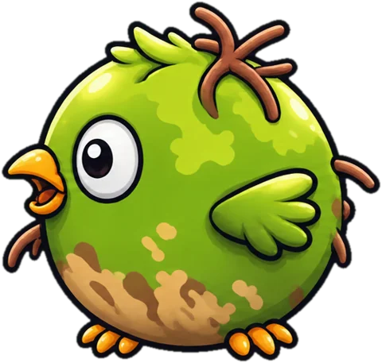

 Grass
Grass Wind
WindTap a stage to read its story.
Sproutch is an endearingly round little bird, almost perfectly spherical, covered in scruffy olive-green feathers and a messy tuft of brown twigs on its crown. Its large round eyes take up most of its face and its tiny beak pokes out from between two enormous cheeks of fluffy down. It sits on ledges at the Gale Ridge's base and watches the updrafts above it with total fascination - it cannot yet fly but it leans into the wind gusts so hard it sometimes tips over and has to right itself with visible effort.
Field note: Sproutch has been observed tipping forward in a gust exactly forty-one times in a single day - it never seems to learn to brace itself.
Storm Spire. Sproutch and its family are found in the Storm Spire. See everyone who lives there.
Share a Bond Food that matches its types to become friends. Sproutch loves:
A Bond Food is not a trick. It joins your spirit with the Kimuro's spirit, and only when it chooses you.
Print the Kimuro adventure packs: mazes, cards, a board game and Bond Mark medals.
See the printable packs